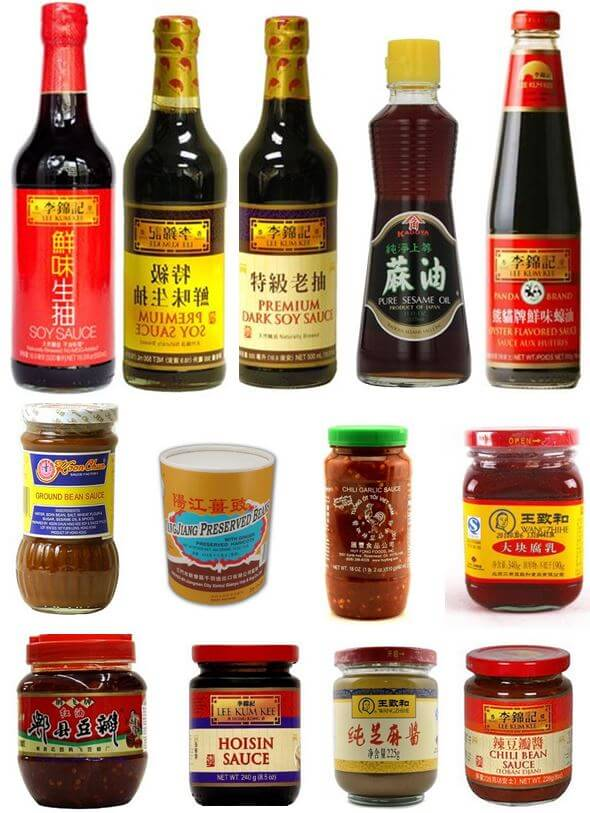
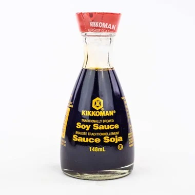
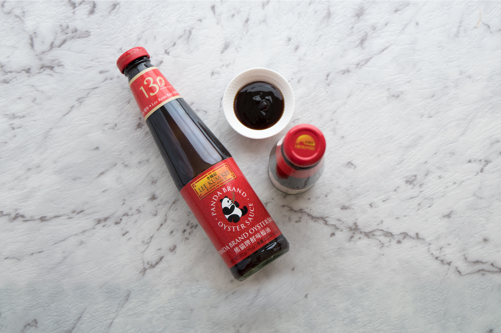
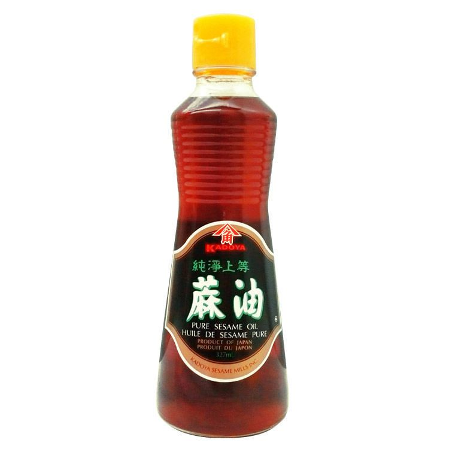

Demystifying Asian Sauces
A large part of what makes Chinese cuisine great is their prevalent use of delicious sauces that can add a lot of flavor to any dish. In this article, we will be going over a few of the most common sauces used in Chinese cuisine.
Soy Sauce

Probably one of the most iconic and recognizable sauces. It is a dark-coloured, salty liquid made from
fermented soybeans and wheat. Soy sauce originated from China, which then spread throughout Asia. This
sauce is used to add seasoning and colour. It is highly versatile and can be used for a wide range of
dishes, including stir fry's, soups, marinades, and condiments.
There are two kinds of soy sauce offered in Asian supermarkets: light soy sauce and dark soy sauce.
Light soy sauce is a saltier, thinner liquid and is mainly used to season dishes. Dark soy sauce is
sweeter and thicker. This sauce is primarily used to add a darker colour.
Dishes that use soy sauce include sushi, beef chow fun, chow mein, and fried rice. But of course, soy
sauce is
used in a large number of other dishes thanks to its versatility.
Oyster Sauce

Oyster sauce is another common sauce used in Asian cuisine. It is a thick, dark-coloured paste with a
noticeably salty and briny taste. This sauce is primarily made from oyster juices, salt, and sugar.
Oyster sauce is said to have originated in 1888 by accident when a Chinese fool stall vendor named Lee
Kum Sheung forgot he was simmering a pot of oyster soup, and it cooked down into a thick brown paste.
Similar to soy sauce, you may find different kinds of oyster sauce in Asian supermarkets. Generally,
look for ones made by a brand called Lee Kum Kee as they are known to make high quality sauces. They
offer two kinds of oyster sauce: Panda brand and a Premium brand. While both are great options, the
Premium brand offers a richer umami taste thanks to its higher concentration of oyster ingredients.
However, the Premium brand is noticeably more expensive than the Panda brand and can be nearly double
the price. Lee Kum Kee also offers a vegetarian option made from mushrooms instead of oysters.
Oyster sauce is used in many dishes such as stir-fried broccoli, beef stir-fry, and chicken lo mein. It
can also be used in marinades or just straight up as a condiment.
Sesame Oil

Sesame oil is yet another common component in Asian cuisine. It is a moderately dark and opaque oil that
is quite viscous. It has an earthy and nutty taste and is rather strong for just small amounts. Be sure
to use it sparingly, as using too much can overpower a dish. Sesame oil was produced over 5000 years ago
and is one of the oldest vegetable oils out there.
In Asian supermarkets, you'll generally see two types of sesame oil: toasted (dark) sesame oil and light
sesame oil. Toasted sesame oil is the more commonly used type and is primarily used as a seasoning after
(or just before) a dish is done cooking. It has a low smoke point, so it is not recommended for cooking
at high temperatures. Light sesame oil is made from untoasted seeds and has a milder flavor. This type
is more suitable for cooking than the toasted version. The better brands to buy sesame oil from are
Kadoya and Lee Kum Kee.
Dishes that use soy sauce include tomato tofu soup, garlic noodles, and sesame chicken. It can also be
used in marinades.
Back to Home...